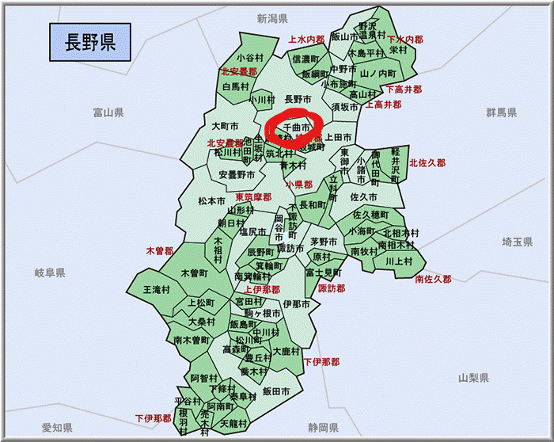
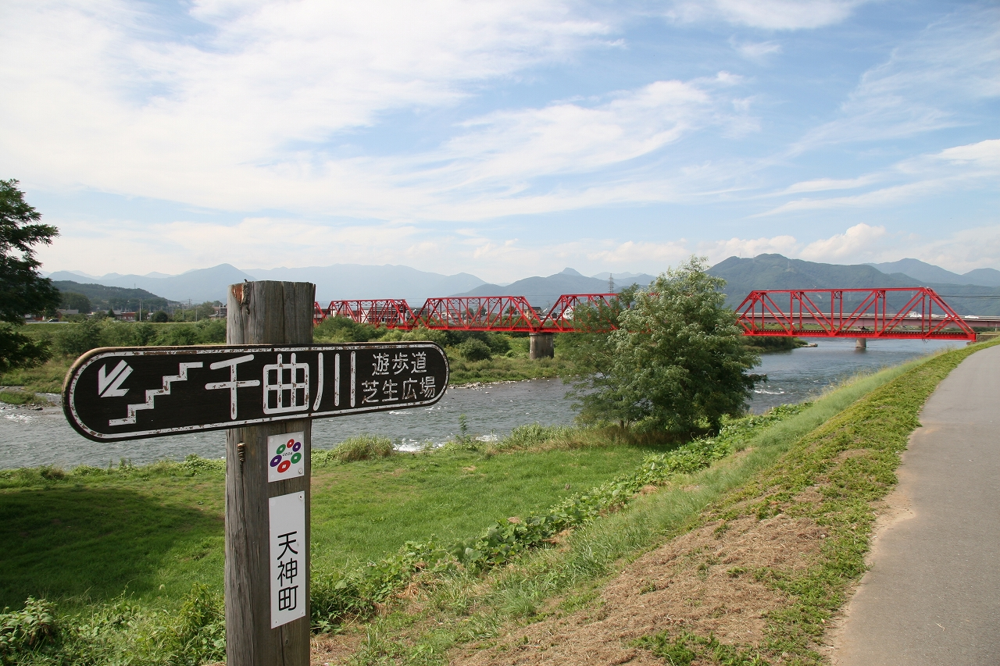
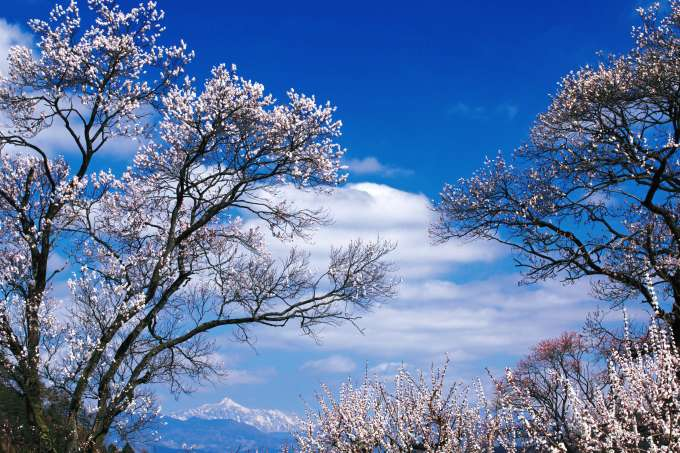
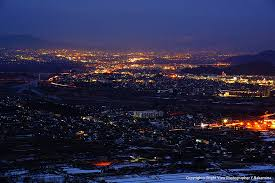
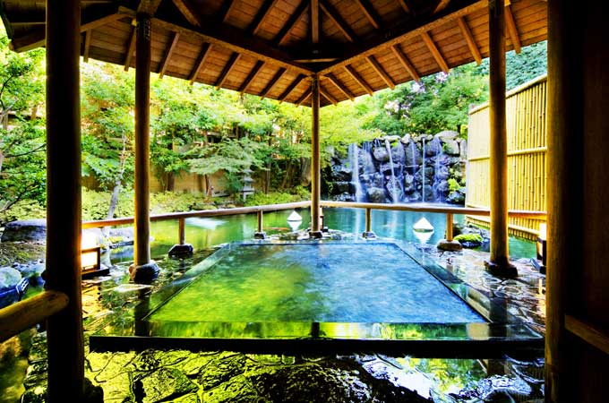

千曲市とは、長野県の北部に属します。千曲市は更埴市・戸倉町・上山田町が合併してできました。実は観光名所でもあるのです！約6万人の方が住んでいます。新幹線ができたことによりすこしマイナーになってしまったかもしれません…。
千曲川を知っていますか？実は、日本一長い川なんです。疑問に思った方もいると思います。信濃川じゃないの？？長野県では千曲川、新潟県では信濃川と呼ばれているので同じ川になります。全長367kmのうち、千曲川は214kmです。河川法上では千曲川を含めた信濃川本流を「信濃川」と規定しているため、日本で一番長い川は信濃川となります。川中島古戦場など歴史的場所も多いのです。
あんずは、バラ科サクラ属の落葉小高木です。英名でアプリコット。桜よりもやや早く、葉に先立って淡紅色の花を咲かせます。初夏にはウメによく似た橙黄色の果実をつけます。美しいため花見の対象になります。このあんずが千曲市は有名なのです。「一目十万本」・「日本一のあんずの里」とうたわれています。 科野の里です。あんずまつりも行っており、大変美しいものになっています。なんと、長野県のあんずの里は上皇ご夫妻も訪れた場所になっています。
姨捨山の夜景は日本の夜景百選にも選ばれています。また棚田も素晴らしく、絶景です。夜景だと行きづらい人も多いと思います。なんとツアーまで出ているのです。実は人気スポットなんです。都会とは違った温かみのある夜景をみるのはどうでしょうか？
戸倉上山田温泉は信州一の温泉街です。長野県には有名な善光寺があります。この善光寺詣りの精進落としの湯として昔から親しまれている。開湯120年を超える歴史ある温泉です。美肌の湯としても有名で、ぜひ長野県の観光に来た際に訪れてみるはいかがでしょうか。